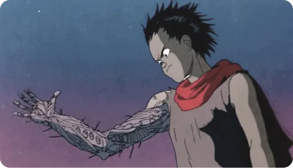
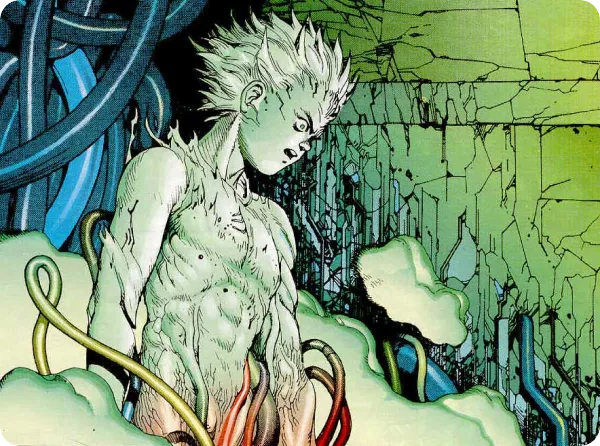

Adapté du manga du même nom,Akira est un symbole majeur de la culture geek et cyberpunk.
Akira, sorti en 1988 et réalisé par Katsuhiro Otomo, est un film d’animation appartenant au genre cyberpunk post-apocalyptique.
Son histoire se déroule à Néo-Tokyo (Nouvelle Tokyo), 31 ans après la 3ème guerre mondiale en 2019 ayant ravagé la métropole.
Corrompue, celle-ci sert désormais de repaire à un groupe de motards parmi lesquels figurent originellement le personnage principal, Kaneda et l’antagoniste, Tetsuo.
Après un accident de moto, ce dernier développe des pouvoirs télékinésiques qui rappellent la puissance s’étant abattue sur Tokyo, attribuée à une arme nucléaire.
Le film montre un contexte dystopique s’étendant notamment à un conflit social et une question générale quant à l’emploi de la technologie et du nucléaire à des fins militaires, la guerre et la rébellion, les drogues et la corruption.
Si l’ambiance visuelle d’Akira à marqué les esprits, c’est notamment grâce à son univers post-apocalyptique plongé dans une atmosphère rétro dont témoignent notamment les designs des motos équipées d’écrans de la bande du protagoniste ou encore le style vestimentaire très iconique de ce dernier.
La technologie prend une très grande place dans cet univers que ce soit du côté allié ou ennemi, militaire ou civil, en particulier à caractère offensif comme les nombreuses armes futuristes ou encore le fait que Tetsuo, l’antagoniste, dispose d’un bras cybernétique et puisse fusionner avec des machines.
On peut également constater l’usage de chambres cryogéniques ou de produits illicites augmentant ses capacités au prix d’une potentielle addiction ou d’une dégradation irréversible de son humanité.
Le film présente les forces États-Uniennes comme une puissance désireuse d’acquérir et de contrôler des phénomènes qui dépassent l’humanité, aussi, Tetsuo est représentatif du pouvoir dans de mauvaises mains.
Humain devenu arme, il apparaît toutefois que lui-même ne soit pas ce qu’il existe de plus puissant dans son univers; une leçon qui rappelle le souhait de l’humain de se rapprocher d’un idéal entre puissance physique, militaire et politique et technologie.